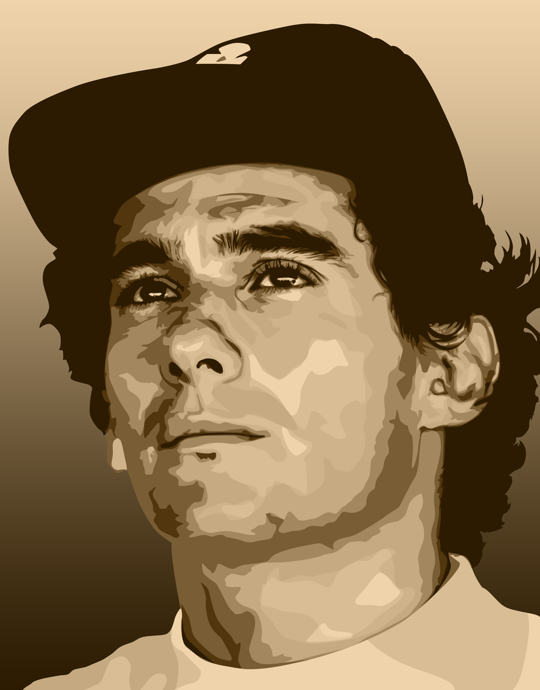
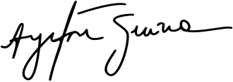

Este site foi feito com o intuito de evidenciar, aos demais entusiastas de fórmula 1, um dois maiores piltos de fórmula 1 que já passaram nessa terra, Ayrton Senna da Silva, também apelidado de Beco pelos mais íntimos.
Nome Completo: Ayrton Senna da Silva
Nome dos Pais: Milton da Silva e Neyde Joanna Senna
Data de Nascimento: 21/03/1960
Local de Nascimento: Maternidade de São Paulo, no bairro de Cerqueira César, São Paulo
Data de Falecimento: 01/04/1994
Causa do Falecimento: Acidente automobilístico
Cônjuge: Lilian de Vasconcellos
1981: Formula Ford 1600
1982: Fórmula Ford Britânica 2000
1982: Fórmula Ford Britânica
1983: Fórmula 3 Inglesa
1983: Grande Prémio de Macau
1988: Fórmula 1
1990: Fórmula 1
1991: Fórmula 1
